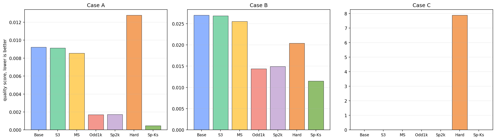
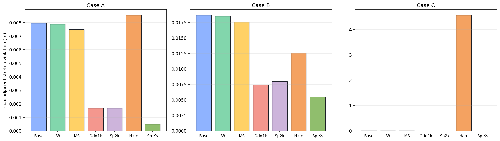
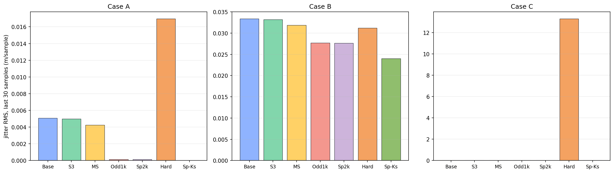
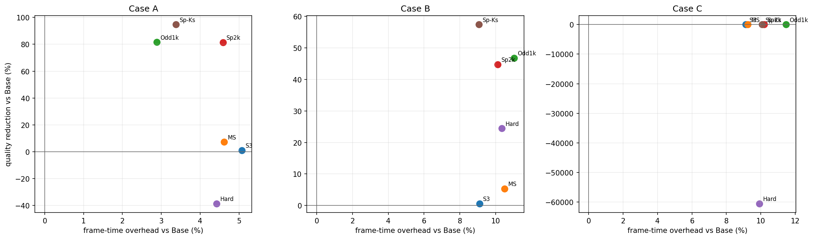

VBD LRC
240-frame dense comparison, 96 segments, 60 Hz, four substeps, four VBD iterations. Stretch damping is zero. Lower quality score is better, but the tables keep adjacent stretch, jitter, and cost separate.
Summary




Comparison
Compare each variant against its own Base case. The preferred candidate is chosen from variants within 2% of the best quality score, then by lower frame time and fewer links. This avoids choosing a denser option for a negligible metric win.
Same-ke result: the soft sparse LRC with ke_lrc = stretch_ke = 3e5 is stable in this run and wins the combined score in all cases. It should still be treated as a stiffness probe until tested on more shapes, because a long chord at the same numeric ke is not the same physical object as one local stretch joint.
Parameters
| segments | 96 |
|---|---|
| segment_length | 0.05 |
| frames | 240 |
| fps | 60 |
| substeps | 4 |
| VBD iterations | 4 |
| sim dt | 1 / (60 * 4) |
| device | cuda:0 |
| stretch_ke | 3e5 |
|---|---|
| stretch_kd | 0 |
| bend_ke | 2e1 |
| bend_kd | 1e-3 |
| radius | 0.025 |
| beta | 0 |
| LRC slack ratio | 0.002 |
| LRC mode | soft unilateral, except hard probe |
| Base | no LRC |
|---|---|
| S3 | sliding hop 3, stride 4, ke 1e3 |
| MS | sliding hops 3/7/15, stride 8, ke 8e2 |
| Odd1k | pin-star, stride 2, start 3, ke 1e3 |
| Sp2k | pin-star sparse, stride 4, start 5, ke 2e3 |
| Hard | hard sparse probe, ke 2e2 |
| Sp-Ks | soft sparse, ke 3e5 = stretch_ke |
Case A
Selected: Sp-Ks (23 links, quality 94.8% better, frame time +3.4%).
Base
Sp-Ks
| Variant | Links | Quality | Q change | Max adj | Adj change | Jitter | Jit change | ms/frame | Overhead |
|---|---|---|---|---|---|---|---|---|---|
| Base | 0 | 0.00922 | +0.0% | 0.007947 | +0.0% | 0.005093 | +0.0% | 5.425 | +0.0% |
| S3 | 24 | 0.009122 | +1.1% | 0.007872 | +0.9% | 0.004998 | +1.9% | 5.701 | +5.1% |
| MS | 35 | 0.008547 | +7.3% | 0.007487 | +5.8% | 0.004241 | +16.7% | 5.675 | +4.6% |
| Odd1k | 47 | 0.001708 | +81.5% | 0.001675 | +78.9% | 0.0001302 | +97.4% | 5.581 | +2.9% |
| Sp2k | 23 | 0.001715 | +81.4% | 0.001681 | +78.8% | 0.0001358 | +97.3% | 5.674 | +4.6% |
| Hard | 23 | 0.01278 | -38.6% | 0.008537 | -7.4% | 0.01696 | -233.0% | 5.665 | +4.4% |
| Sp-Ks | 23 | 0.0004823 | +94.8% | 0.0004823 | +93.9% | 1.313e-08 | +100.0% | 5.608 | +3.4% |
Case B
Selected: Sp-Ks (23 links, quality 57.4% better, frame time +9.1%).
Base
Sp-Ks
| Variant | Links | Quality | Q change | Max adj | Adj change | Jitter | Jit change | ms/frame | Overhead |
|---|---|---|---|---|---|---|---|---|---|
| Base | 0 | 0.02698 | +0.0% | 0.01863 | +0.0% | 0.03337 | +0.0% | 5.095 | +0.0% |
| S3 | 24 | 0.02681 | +0.6% | 0.01851 | +0.7% | 0.03322 | +0.5% | 5.559 | +9.1% |
| MS | 35 | 0.02553 | +5.4% | 0.01756 | +5.7% | 0.03187 | +4.5% | 5.629 | +10.5% |
| Odd1k | 47 | 0.01436 | +46.8% | 0.007436 | +60.1% | 0.02769 | +17.0% | 5.657 | +11.0% |
| Sp2k | 23 | 0.0149 | +44.8% | 0.007989 | +57.1% | 0.02766 | +17.1% | 5.610 | +10.1% |
| Hard | 23 | 0.02039 | +24.4% | 0.01259 | +32.4% | 0.03118 | +6.6% | 5.622 | +10.3% |
| Sp-Ks | 23 | 0.01149 | +57.4% | 0.005479 | +70.6% | 0.02403 | +28.0% | 5.557 | +9.1% |
Case C
Selected: Sp-Ks (46 links, quality 63.1% better, frame time +10.1%).
Base
Sp-Ks
| Variant | Links | Quality | Q change | Max adj | Adj change | Jitter | Jit change | ms/frame | Overhead |
|---|---|---|---|---|---|---|---|---|---|
| Base | 0 | 0.01299 | +0.0% | 0.009839 | +0.0% | 0.01261 | +0.0% | 5.089 | +0.0% |
| S3 | 24 | 0.01296 | +0.3% | 0.009818 | +0.2% | 0.01257 | +0.3% | 5.553 | +9.1% |
| MS | 35 | 0.01251 | +3.7% | 0.009489 | +3.6% | 0.01209 | +4.1% | 5.559 | +9.2% |
| Odd1k | 93 | 0.006593 | +49.3% | 0.004266 | +56.6% | 0.009307 | +26.2% | 5.672 | +11.5% |
| Sp2k | 46 | 0.0066 | +49.2% | 0.004277 | +56.5% | 0.009291 | +26.3% | 5.607 | +10.2% |
| Hard | 46 | 7.883 | -60577.5% | 4.559 | -46231.1% | 13.298 | -105351.6% | 5.594 | +9.9% |
| Sp-Ks | 46 | 0.004793 | +63.1% | 0.004707 | +52.2% | 0.0003436 | +97.3% | 5.601 | +10.1% |
Files
| data | metrics.json, summary.csv |
|---|---|
| plots | plot_*.png |
| videos | videos/*.mp4 |
Conclusion
The longer run keeps the same direction as the shorter run: pin-star LRC is much more useful than sliding local windows. The new same-ke sparse probe is the current best candidate for these three cable cases: it reduces the combined score by 57-95% with about 3-10% frame-time overhead. The caveat is two-pin max adjacent stretch: lower-k LRC has a slightly smaller peak adjacent violation, while same-ke wins by removing almost all late jitter.